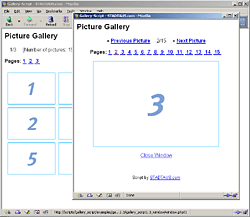
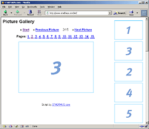

Gallery Script presents: Online Appointment Booking
Our PHP script Schedule Organizer allows a customer, patient or client to schedule an appointment via the company's, doctor's or consultant's homepage. PHP script simplifies and automates appointment administration - the employees responsible save time as there are fewer telephone calls, faxes and letters to answer.
Schedule Organizer Website
Back To Top
Documentation Gallery Script
Thank you for your interest in our Gallery Script. We recommend to read this documentation carefully.
Introduction
The script has been configured in a way that makes it ready to use. You only need to upload all script files to your web server. When you intent to edit the script you should do it step by step. After each change you should run the script to monitor the effects. Doing so enables you to know what change eventually causes an error.
The HTML templates of the script have been generated by the specifications of XHTML 1.0. HTML tags like <br> or <input> contain an ending slash (<br /> or <input type="text" name="field" />).
Functions of the script
- Lists automatically all images in a directory
- Number of images per row and page can be defined
- The display order of the images can be defined
- Layout is template driven and easy to customize
- The image views can be counted and displayed to the visitors
Set up and configuration
The files 'index.php' and 'window.php' ('x_frame_navi.php' and 'x_frame_main.php' or 'x_simple_index.php' and 'x_simple_window.php') are the same script with different configuration. The following variables can be edited:
| $image_path |
|
If you want to use a different image folder than the default you can change the path in this variable. You can enter the relative path (default setting) or the complete server path to the image folder (i.e.: /usr/local/etc/httpd/...).
|
| $image_url |
|
This variable is the image path to call up the pictures in the HTML pages. You can enter the relative path (default setting) or the complete web path to the image folder (i.e.: if the www address to the image is http://www.server.com/images/picture.gif, the absolute path is '/images/picture.gif').
|
| $picture_count |
|
In this variable you can define the number of images that you want to be in a row. The default value of 'index.php' is 2 pictures in a row and the default value of 'window.php' is 1 pictures in a row.
|
| $pictures_per_page |
|
This variable contains the number of images on one page.
|
| $order |
|
This variable contains the order direction of the images. Available are 'ascending' (a, b, c, 1, 2, 3) and 'descending' (c, b, a, 3, 2, 1). The order consists of the filenames.
Example:
$order = "ascending";
or
$order = "descending";
|
| $language |
|
With this variable you can set the language. Enter here the abbreviation that also is used in the name of the language file in the directory 'languages' (en in languages.en.inc.php and de in languages.de.inc.php).
|
| $global_template |
|
Enter here the path to the layout template.
|
| $cell_template |
|
Enter here the path to the table cell template. In the cell template you can customize the layout of the images, the links to the large images and the table cells.
|
| $large_image_page |
|
Enter here the name of the file that you want to show the large images by clicking on the thumbnail images. That means if the file index.php contains the thumbnails and the file window.php contains the large images value of this variable in index.php is window.php.
|
| $path['log'] |
|
You can let the script count the image views. This variable contains the path to the directory, where the log file is stored.
If you want to use the counting feature please make sure the log directory is writable (chmod 777).
|
| $logging_file |
|
If you want to let the script count the image views, enter here a name for the logging file. White spaces and special characters are not allowed.
This variable is empty by default, no image views will be counted unless you enter a log file name.
If you want to use the counting feature please make sure the log directory is writable (chmod 777).
|
| $statistic_file |
|
If you want to display the image views to your visitors please enter here the name of the logging file you want to be analyzed. The values appear in the placeholder {views} within the HTML templates.
As example file the script contains the log file 'gallery_one.txt' in the log directory. That is to demonstrate the display of image views.
If you want to use the counting feature please make sure the log directory is writable (chmod 777).
|
| $add_text |
|
You can add further values, text, variables or other content to this variable. That content can be displayed in the HTML templates by using markers/placeholders within curly brackets { and }.
If you want to add your own values to the variable $add_text please follow the pattern from the example entries.
$add_text = array(
'txt_additional' => 'Additional',
'txt_more' => 'More'
);
The first part of each entry is the name of the placeholder. In case you want to use the value of txt_addition in your template enter the name of the entry with curly brackets - {txt_addition}. The name must not contain white spaces or special characters. Only allowed is the _ .
|
When you open the script in your browser and get an empty screen (no error message) you ran probably into a know but still unsolved problem. Please let us know what server operating system, web server version, and PHP version your web host uses.
Go Top
HTML template customization
The directory 'templates' contains the files for the layout. You can use HTML and CSS to customize the layout as you wish.
Each of the templates 'index.html' and 'window.html' contain the layout for the page. The templates 'table.html' and 'window_table.html' contain the layout of the table rows. The script takes the table cell and transform it to a full table.
In case you are using a WYSIWYG editor like Dreamweaver, Frontpage or NetObjects please make sure that the software does not make any changes by itself.
The template files contain markers with { and } like: {txt_next_page}. These markers will be replaced by its counterparts from the language file 'languages/language.en.inc.php'. You are free to edit that file and change the words and phrases. You are also free to replace the markers within the template files by real words or put those markers to other positions within the template file. And you are also able to enhance the language file by using the given pattern.
Amongst those word markers exist the so called Loops. Similar to HTML tags the two parts (…) must not be separated. If you want to alter the position within the template you move the hole block.
Following placeholders are in use by the script:
{script_name} Name of the gallery file
{prev} Start value for the previous page
{next} Start value for the next page
{currentpage} Page number
{allpages} Total number of pages
{allpictures} Total number of images
{link}
{page} Number of pages
{tablecontent} Content of the table templates
{large_image_page} Name of the large image file
{number} Image number
{image_url} Path to the image folder
{name} Image name
The script has been pre-configured in three different ways:

|
|
Window mode. The full-size images are displayed in a popup window. The file names of the files are 'index.php' and 'window.php'. The template file names are 'index.html', 'table.html', 'window.html' and 'window_table.html'.
|

|
|
Simple mode. The thumbnails and the full-size images are displayed within the same window. The name of both files are 'x_simple_index.php' and 'x_simple_window.php'. The template for the preview image cells is 'x_simple_table.html' and the global layout template is 'x_simple_window.html'. The both other templates are the same as in the window version.
|

|
|
The thumbnails are displayed in a navigation frame and the full-size images are displayed in the main frame. The file names are 'x_frame_index.php', 'x_frame_main.php' and 'x_frame_navi.php'. The template name of the frame index page is 'x_frame_index.html'. The template name for the thumbnail page is 'x_frame_navi_table.html'. The other three tempates are the same as in the window version.
|
Several Image Galleries
You are able to run several picture galleries with the same layout templates. Copy the files 'index.php' and 'window.php' and give them a new file name. Now you just need to change the path to the image directory.
Go Top
The Images
The images will be sorted as you defined in the variable $order. With the image name you are able to influence the position of that image.
You also have the option to put a 'image_order.txt' file in your image directory. The file contains the image names in the order you want (one below the other).
If you want to sort the images by its file names just remove the 'image_order.txt' from the image directories.
If you are working with thumbnails and corresponding big images, the names of the images should be the same.
Please make sure that your image directory contains only files you want to display with the script. If you don't want to use the 'image_order.txt' you should delete the file. Rename the 'image_order.txt' will not work and can cause errors.
Go Top
Count and display image views
You can let the script count and display the image views. To activate the feature just set a file name as value of the variable $logging_file. If you set the same file name as $statistic_file that file will be used to analyze the image views.
In case you want to use this feature please make sure that the directory 'log' and the log file (entered in $logging_file) have write permissions (chmod 777).
To demonstrate the counting feature there are the pre-configured files 'x_views_index.php' and 'x_views_window.php'. There are also the template files 'x_views_table.html' and 'x_views_window_table.html'.
The template files contain the placeholder {views} between the <LOOP ...> tags. That placeholder will be replaced by the number of image views. Just take a look at the templates 'x_views_table.html' and 'x_views_window_table.html' how to add the placeholder to the HTML code.
Go Top
Add text captions (i. e. image descriptions)
By using the 'image_order.txt' you can add information (text captions, image descriptions) to each image.
To demonstrate this feature there are the pre-configured files 'zz_captions_index.php' and 'zz_captions_window.php'. There is also the template file 'zz_captions_window_table.html'. Those additional information will be displayed aside the large image.
The file 'image_order.txt' in directory 'images/big' contains further information that are displayed by each image. The 'image_order.txt' is a simple CSV file. You can add further data separated by a semicolon after the image name.
Example:
01.gif;Image Name;Image Description
Each field (column) gets automatically a placeholder to add to the template. Every column is called a field and will be counted ascending by each new field.
Example:
{field_1} {field_2} {field_3} ...
Please take a look at the template 'zz_captions_window_table.html' to learn how to add the placeholders to the HTML template.
Go Top
Upload the script files
Create the following folder on your web server:
/gallery/
/gallery/images/
/gallery/inc/
/gallery /languages/
/gallery/log/
/gallery/templates/
Copy all files to their corresponding folder. Image files (.gif, .jpg, .png) have to be uploaded in binary mode. Every other files have to be uploaded in ASCII mode (text mode).
Go Top
License Information
You can use this script for free. If you want to use the script without the link to STADTAUS.com, you can purchase the script online.
- You may re-distribute the script license to a third party.
- You can make your own pricing.
- A script license applies to a single domain.
Contact: http://www.stadtaus.com/en/
More scripts at STADTAUS.com:
- Formmail Script
- Tell A Friend Script (Website Recommendation)
- Online Appointment Planner
- Google Dance Tool
- Download Script
- Guestbook Script
- Voting Script
Please also visit our project MetaCollection, a guide for webmasters and developers who are in search of CGI, Perl, or PHP script archives.
http://www.metacollection.com/
Go Top
Support
Answers to your questions and solutions for your problems with the script you will find in our
support forum.
Go Top